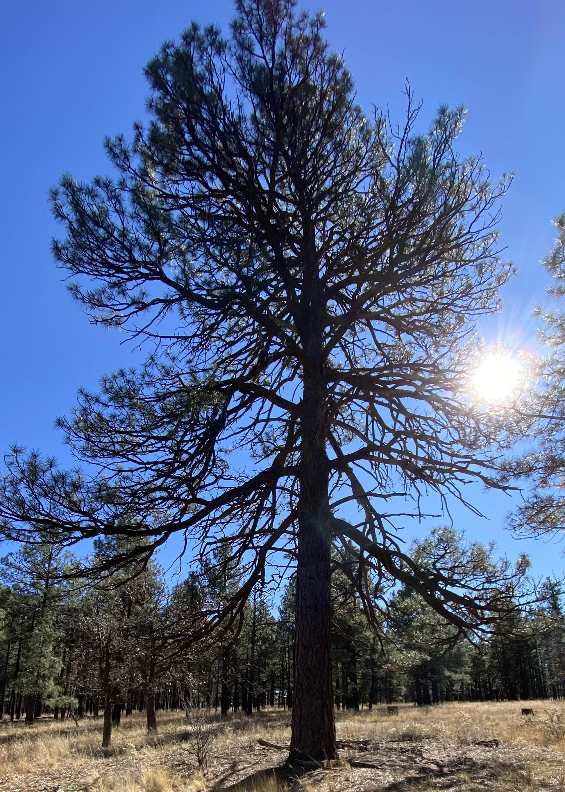

Welcome
Let's get to know one each other
Hello! My name is Courtney Carver, and I am a Licensed Clinical Social Worker (LCSW) with a decade of experience in the social work and mental health fields. I was born and raised in Phoenix, AZ and planted my roots in Flagstaff, AZ after graduating from Northern Arizona University with a Bachelor's of Social Work. I began working with the Department of Child Safety (DCS) instructing foster care programs and assisting with the family preservation and reunification program. Shortly afterwards, I enrolled in the Master's of Social Work program at Arizona State University and graduated in 2014. While attending graduate school, I began working as a Neuro Social Worker for the Brain Injury Alliance working with brain injury survivors. Since graduation, I have had many diverse experiences in a wide range of settings, including becoming an elementary school counselor, foster care licensing instructor, and as a palliative and hospice social worker as a Compassionate Bereavement Care Provider through The MISS Foundation. I have also been teaching as an Associate Professor at Northern Arizona University's School of Social Work since 2017.
In addition to my role as a professor, I have also been working as a private practice mental health counselor and trauma specialist for the last 6 years. My work as a counselor has focused on helping individuals work through trauma and PTSD, especially related to their relationships or family dynamics, as well as anxiety, depression, prenatal and postpartum depression, and grief, infertility, and pregnancy loss. My work in palliative and hospice care has truly shaped my ability to help individuals navigate some of the most difficult and complex situations. I am a Certified Trauma Professional through PESI and have been trained and certified in Eye Movement Desensitization and Reprocessing (EMDR) through Thrive Training and Publications, and I have found it to be one of the most successful treatments for PTSD. Trauma has a way of infiltrating all aspects of life, acting like overgrown weeds in an otherwise beautiful garden.
